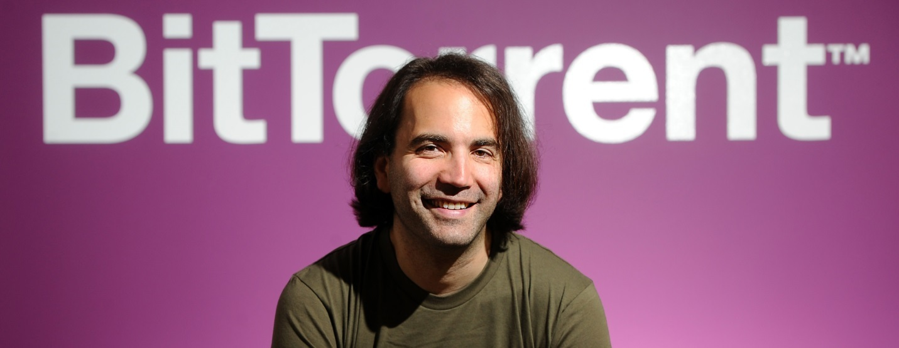
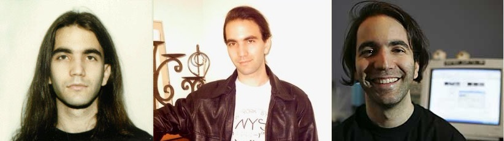

![]()
Брэм Коэн
2 июля 2001 года на доске объявлений Yahoo появилось сообщение от Брэма Коэна. Сообщение было коротким: “My new app, BitTorrent, is now in working order, check it out here"
У меня был большой опыт сетевого программирования в MojoNation. Я хотел совместить свои знания о том, что могло сработать и то, что было интересным, но, было сделано недостаточно правильно и должно было быть полностью переделано с нуля. Не было никакой “Wow!”-идеи, была комбинация прозаичных идей, собранных воедино и тщательно подготовленных, в итоге, вылившихся во что-то мощное.
Брэм Коэн родился 12 октября 1975 года в Нью-Йорке.
Изучил язык программирования BASIC в возрасте 5 лет на семейном компьютере Timex Sinclair.
После окончания Stuyvesant High School учился в Университете Буффало.
Женат, имеет троих детей.
В настоящее время живёт в области залива Сан-Франциско с женой Дженной и тремя детьми
Революция Брэма Коэна
В июле 2001 года, Брэм Коэн, молодой человек 25 лет, запустил в Сети протокол BitTorrent. Делая это, он и думать не думал, что совершает что-то великое. И уж тем более у него и в мыслях не было всяких патетических слов о прогрессе, свободе и влиянии на жизнь человечества.
Вряд ли Брэм Коэн, программист милостью Божьей, вообще думал о людях. Он начал программировать в пять лет и с тех пор жил в удивительном мире объектов, операций, модулей, загрузчиков, отладчиков. Это чистый абстрактный мир, в который не доносятся никакие шумы времени. Там, в этом мире, чисто, светло и хорошо. И там, в этом мире, Брэм Коэн проводил всю свою жизнь, за исключением некоторого времени, когда ему приходилось куда-либо ехать на автобусе. Но и в этом реальном, из металла и пластика автобусе он отсутствовал, ибо у него в руках был кубик Рубика, который он раз за разом собирал за рекордную минуту. Потом ему надоел этот кубик, и он создал свою собственную головоломку из трех зубчатых колесиков, расположенных под углом друг к другу. Надо было зацепить зубчики так, чтобы все три колесика могли вращаться. Это тоже была задачка для чистого разума, вынужденного иногда отвлекаться от программирования.
Известно, что Брэм Коэн болен легкой формой аутизма, но неизвестно, страдает ли он от этого. Люди для него нечто вроде «черного ящика» — движущиеся фигуры с программами, код которых ему недоступен. Эти фигуры что-то говорят и что-то делают на окраине его сознания, но, в общем, не представляют для него большого интереса. С годами Брэм Коэн сумел пробить в своем отрешении туннели, через которые он выходит к людям. Например, к своей жене Дженне и к трем своим детям.
«Пиратская Бухта»,запущенная в ноябре 2003 года, была реализацией идеи Брэма Коэна на практике. Этот торрент-трекер мгновенно обеспечил обмен файлами во всемирном масштабе между миллионами людей. Люди обменивались музыкой, фильмами, программами, текстами, политическими прокламациями, порнографией, комиксами, играми — и вообще всем, что существует в цифровом виде. В упорядоченном мире правильного капиталистического товарообмена возникла гигантская дыра, которая втягивала в себя все новые и новые вещи. Эти цифровые вещи переходили от человека к человеку без всякой оплаты. Протокол BitTorrent — всего-то набор цифр и команд, придуманный безобидным программистом в Сан-Франциско — отменял самое незыблемое вещество современного мира: деньги. Из абстрактного мира Брэма Коэна, из языка Python, из отрешения и поглощения, из символов, непонятных большинству людей, и команд, в которых, как в темном лесу, могут заблудиться самые лучшие командиры, — родилось всемирное брожение.
В это идейное брожение практически мгновенно оказался вовлечен весь мир. Только на «Пиратской Бухте», многократно атакованной защитниками копирайта, постоянно осажденной отрядами юристов, день и ночь находящейся под обстрелом крупнейших компаний, сейчас находятся 29 миллионов пиров. Но дело не только в сетевом обмене. Революция очень быстро выплеснулась из чистенького мира Сети на грязные улицы городов, в предместья мегаполисов, в сквоты и общины, где люди пытались перебросить мостик между сетевой свободой и реальной жизнью. Как создать в реале ту свободу и ту децентрализованную жизнь, которая существует в онлайне? Как от бесплатного обмена цифровыми ценностями перейти к экономике, в которой бесплатны еда и книги? Что в реальной жизни может и должно сыграть ту роль, которую в виртуальной играет протокол BitTorrent? Цензура и власть, богатство и нищета, справедливая оплата творца и несправедливые прибыли корпораций — все эти вопросы с новой силой задвигались, зашумели, завертелись в головах людей и в их жизни.
Программист-аутист, заваривший всю эту кашу, в ответ на все вызовы времени создал в Сети маленький магазинчик, где любой желающий может купить за 10—15 долларов придуманные им головоломки. Всем человеческим языкам, с их запутанными и нелогичными грамматиками, он по-прежнему предпочитает тот, на котором можно так красиво и четко формулировать в высшей мере поэтичные мысли. О всемирном брожении, революции, новой эпохе, новых ценностях Брэм Коэн, очевидно, тоже иногда думает, иначе откуда бы в его «Твиттере» пару недель назад появилась окрашенная легким юмором фраза о том, что «не существует общества, которое было бы сконструировано настолько правильно, чтобы от людей не требовалось, чтобы они были хорошими».